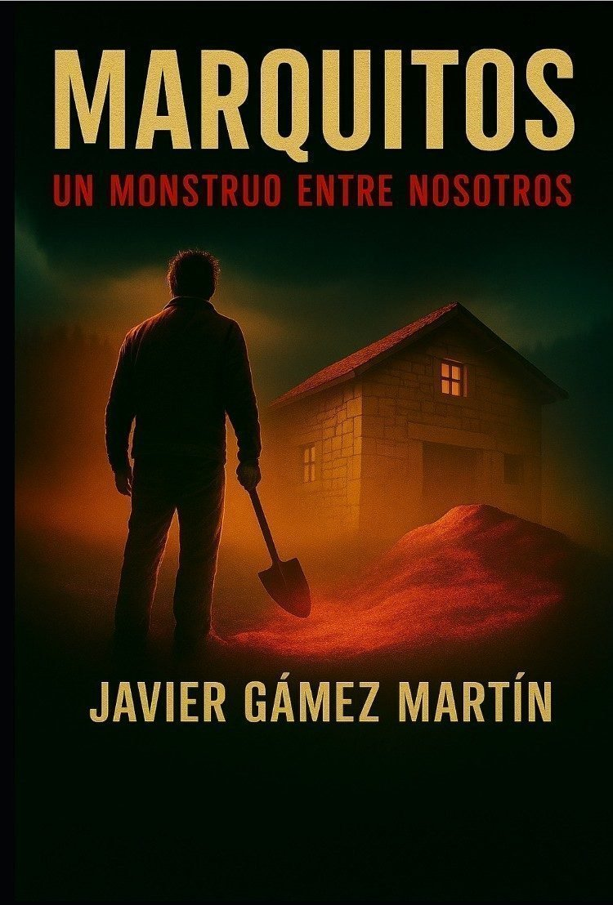
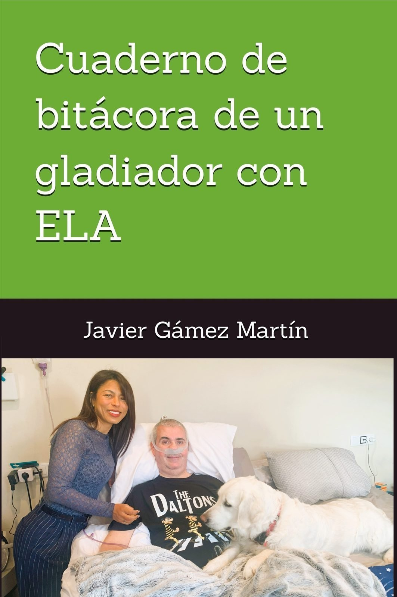
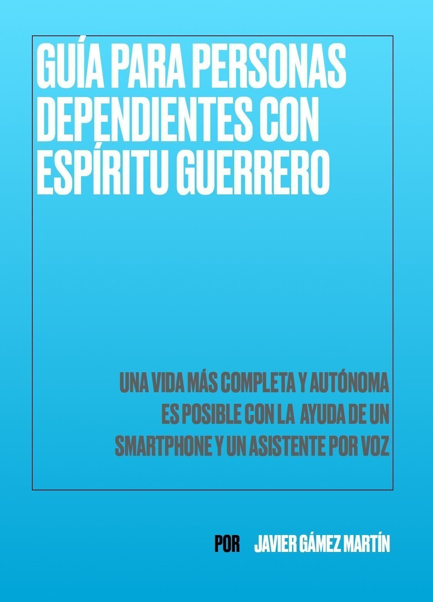

Obras
Libros de Javier Gámez Martín
Tres obras nacidas de lugares muy distintos: la novela negra, la trinchera íntima de la ELA y la tecnología como herramienta para recuperar autonomía.

Novela negra
Marquitos
Un monstruo entre nosotros
Una novela negra de suspense psicológico que combina reconstrucción forense, realismo procedimental y exploración de la memoria traumática.
Marcos nace en Granada marcado por la pérdida y la desestructuración familiar. Desde niño muestra rasgos que lo apartan de los demás. A los quince años comete su primer asesinato en el aula, un acto que abre una trayectoria de violencia contenida y premeditada.

Memorias · ELA · Amor
Cuaderno de bitácora de un gladiador con ELA
Una oda a la vida desde la trinchera de doña ELA
No es solo un libro sobre la ELA. Es una historia de amor, pérdidas, humor, resistencia y felicidad posible, escrita íntegramente mediante control ocular.
Cuando más le sonreía la vida, un martes 13 de noviembre de 2018 llegó el diagnóstico. Lo que vino después fue una lucha contra una enfermedad atroz, pero también una afirmación radical del amor, la familia, la dignidad y las ganas de seguir formando parte del bando de los vivos.

Guía gratuita
Guía para personas dependientes con espíritu guerrero
Tecnología sencilla para recuperar pequeñas parcelas de libertad
Una guía práctica de distribución libre, nacida de la experiencia directa de convivir con la ELA en fase avanzada.
Recoge herramientas tecnológicas y de domótica básica —smartphone, asistentes de voz, Alexa, Smart Life, Broadlink y control ocular— que pueden ayudar a las personas dependientes a ganar autonomía en su día a día.